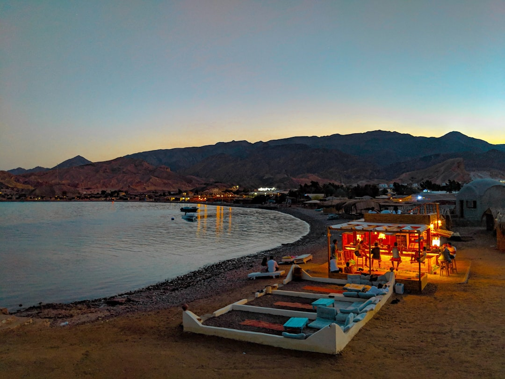

Location
South Sinai (North of Dahab)
Best Time to Visit
April to October
Perfect For
Diving, Kite Surfing, Relaxing
About Ras Abu Galum
Protected due to its incredibly rich and diverse marine life, Ras Abu Galum is an isolated paradise nestled between towering granite mountains and the crystal-clear Red Sea. Because there are no paved roads to the location, it remains free from mass tourism, preserving an authentic Bedouin lifestyle and pristine nature.
The protectorate is famous for its vibrant coral reefs that drop off right from the shoreline, making it one of the best snorkeling and diving spots in the world. Above water, visitors can enjoy a simplistic, slow-paced lifestyle sleeping under star-filled skies in basic straw huts right on the beach.
Interesting Facts
- The unique micro-climate allows for 167 plant species to thrive here, 44 of which are found nowhere else in the world.
- Access involves either a beautiful 1-hour coastal camel ride from the Blue Hole or a short boat trip.
- Because there is very limited electricity and no light pollution, the night sky reveals a blindingly bright Milky Way.
- Contact Us
Photo Highlights

